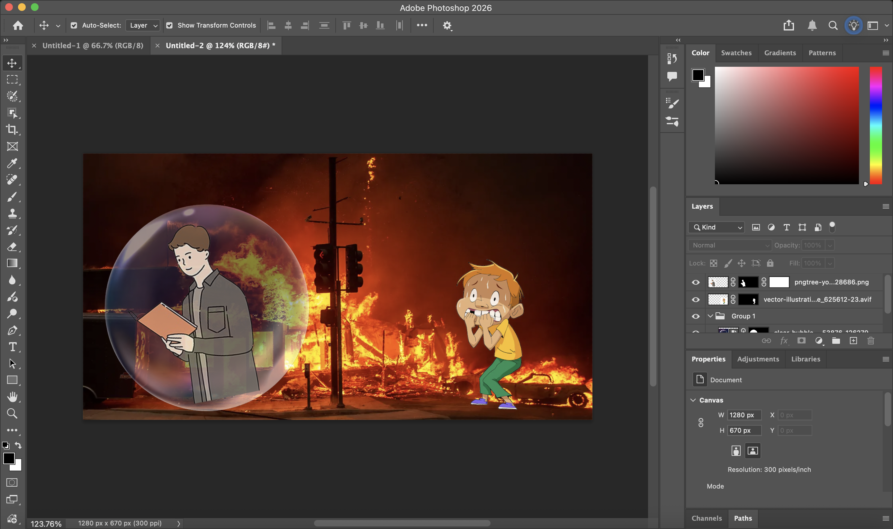

Photo Montage
Digital Composition & Social Commentary

Process / Layers
This photomontage explores the concept of social apathy and the "bubble" many of us live in while global issues unfold around us. I wanted to highlight the jarring contrast between those who have the privilege to remain detached and those who are directly impacted by crisis. By placing a calm, studious figure inside a literal transparent sphere, I’m commenting on how easy it is to stay preoccupied with our own lives while the world is quite literally on fire. The frantic character on the right serves as a reality check, representing the people who don’t have the luxury of a protective barrier and are forced to face these world issues head-on.
To bring this vision to life, I sourced several images from the web and combined them using various Photoshop techniques. I relied heavily on the selection tool to isolate the subjects and utilized layer masks to create the transparency of the bubble, ensuring the fiery background was still visible through it. This masking process was crucial for blending the different art styles—the cartoonish characters against a realistic, high-stakes background—to emphasize the disconnect between the individual's internal world and external reality. By layering these elements, I was able to create a montage that visually communicates the isolation of modern indifference.